Не опубликовано. Документальная 3D-экспозиция, не реконструкция зданий.
Открыть локально · Отчёт и файлы
Земля → Украина → Закарпатье → Кибляры → 3D-экспозиция. Затем — выбор фото, прерывания, вращение, масштабирование и общий вид.
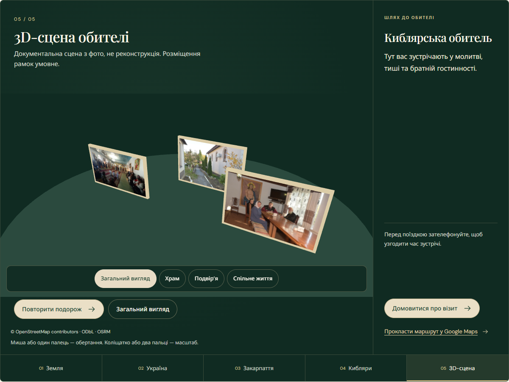
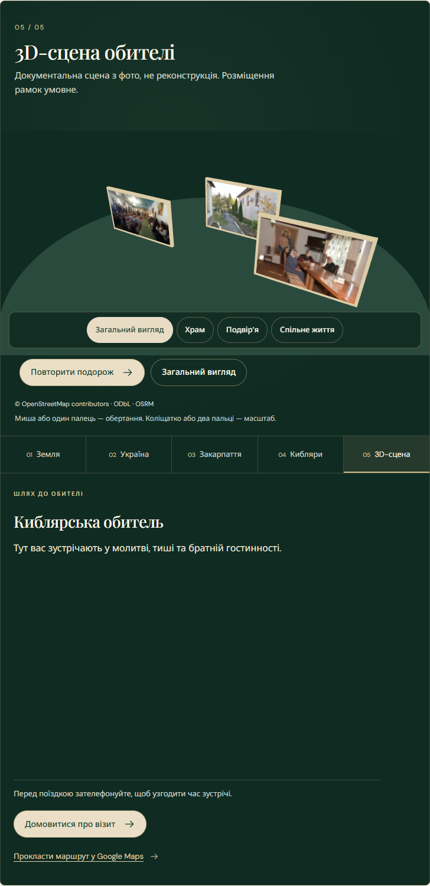
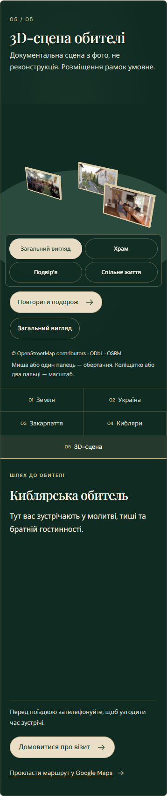
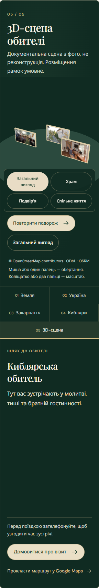
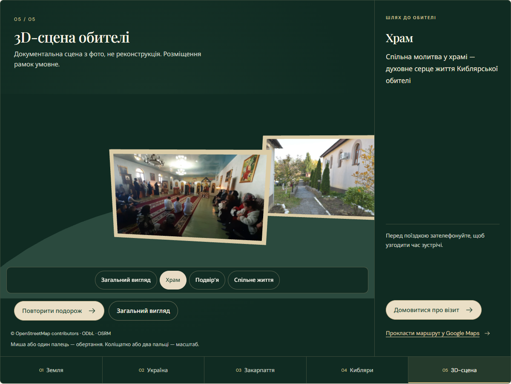
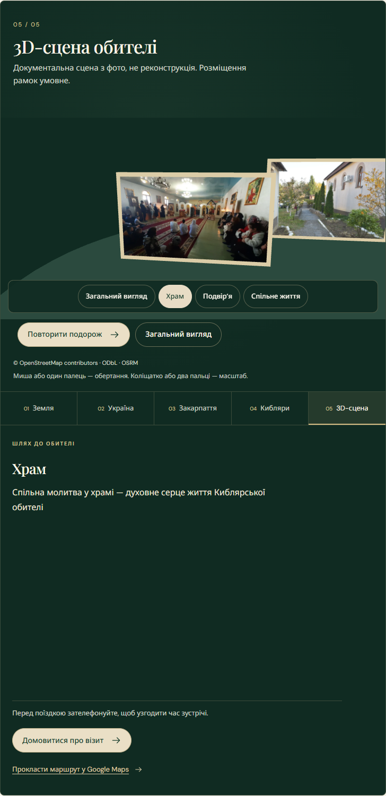
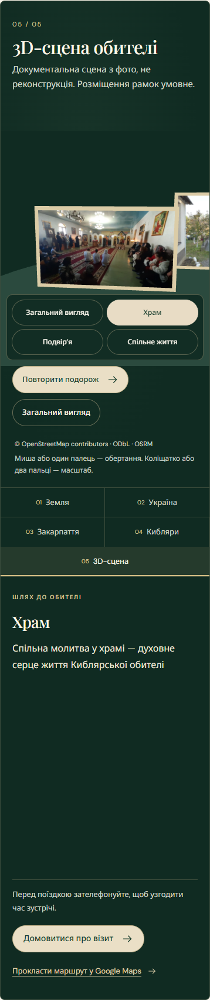
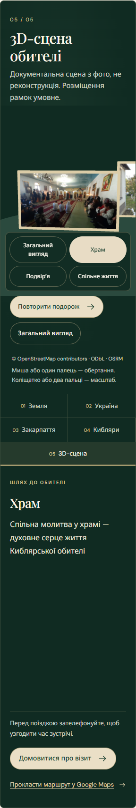
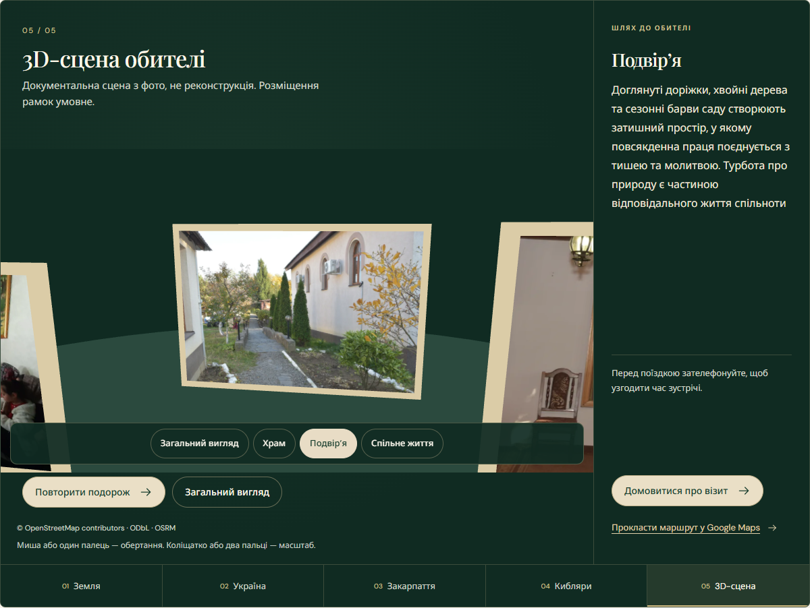
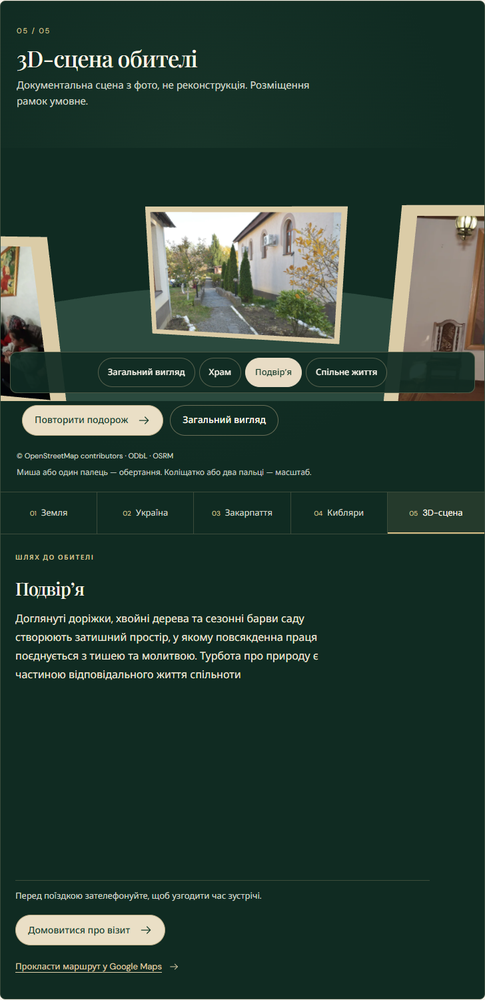
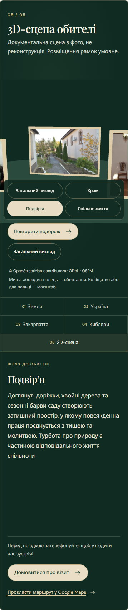
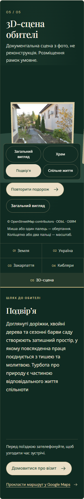